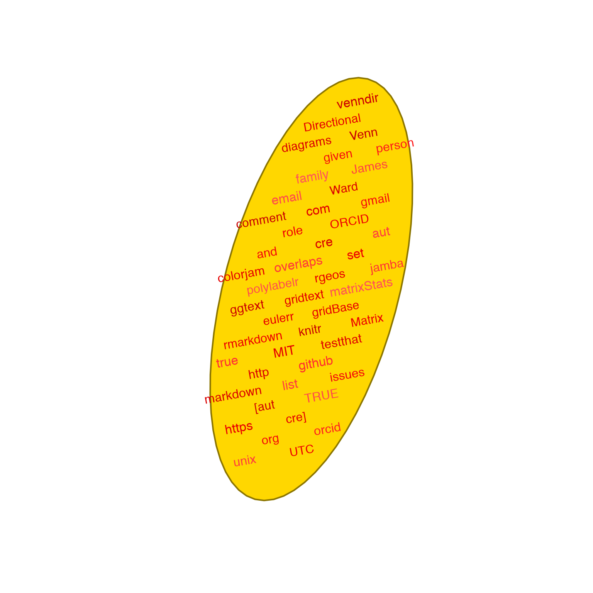
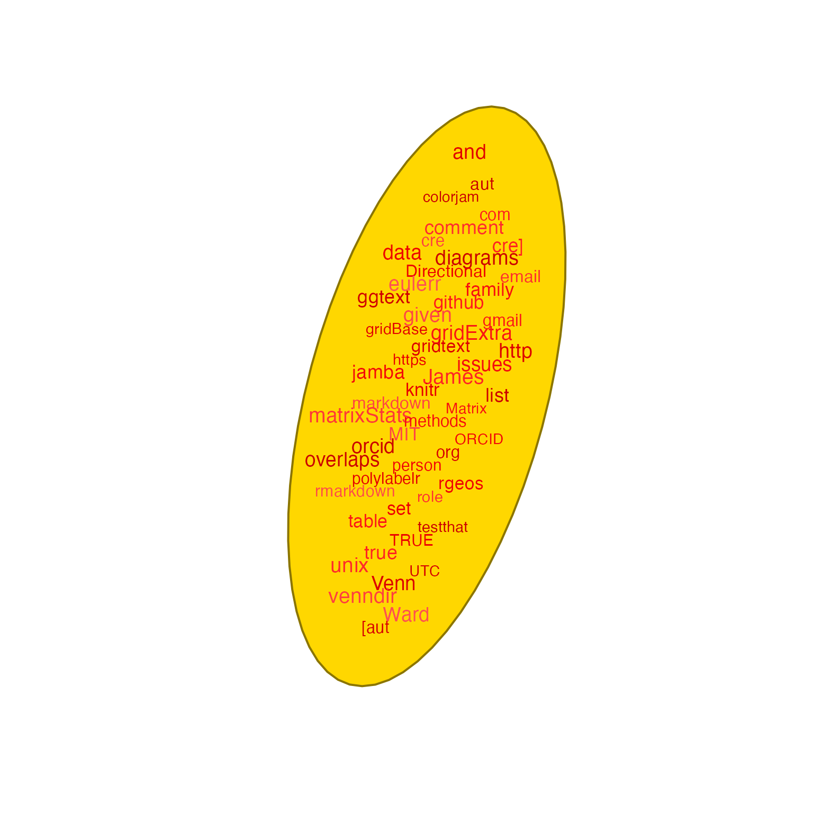
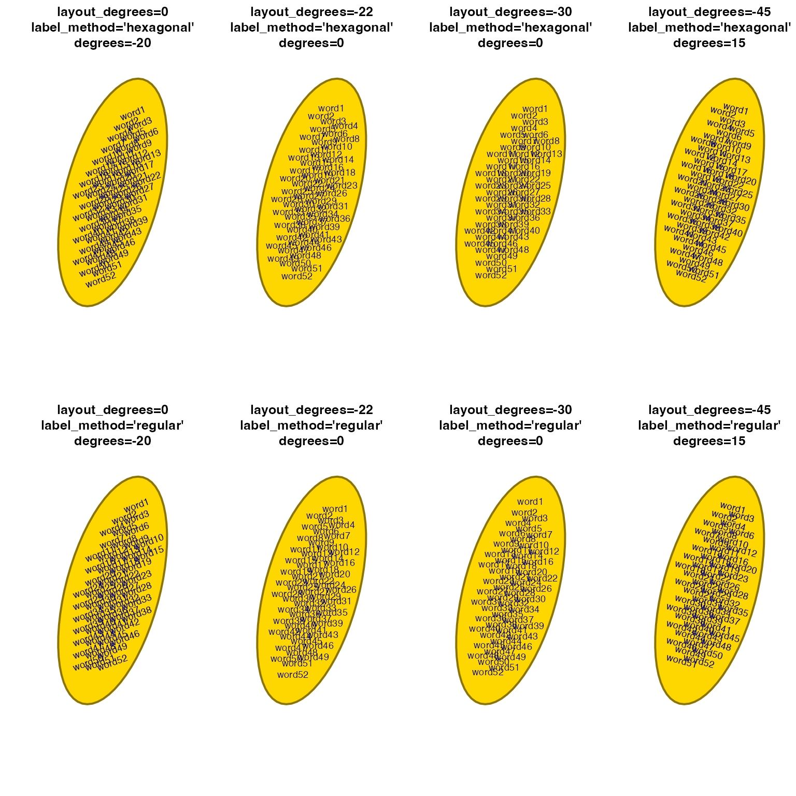
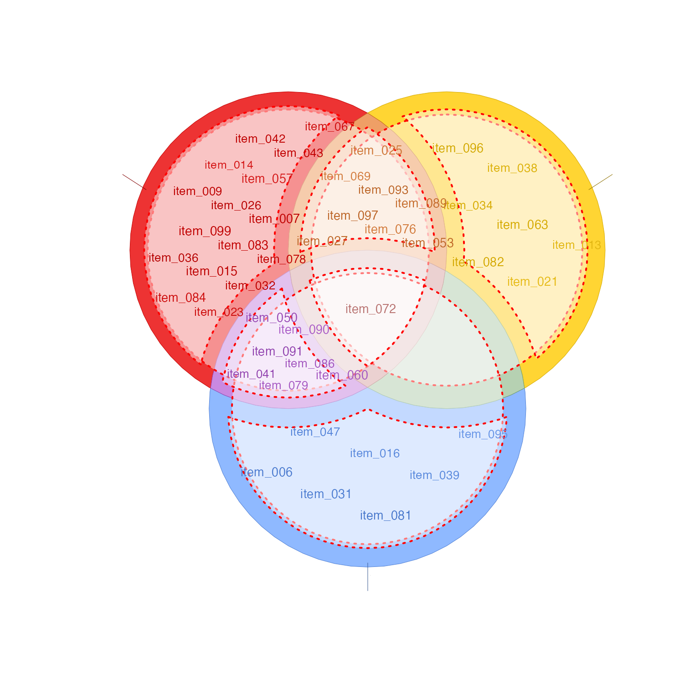
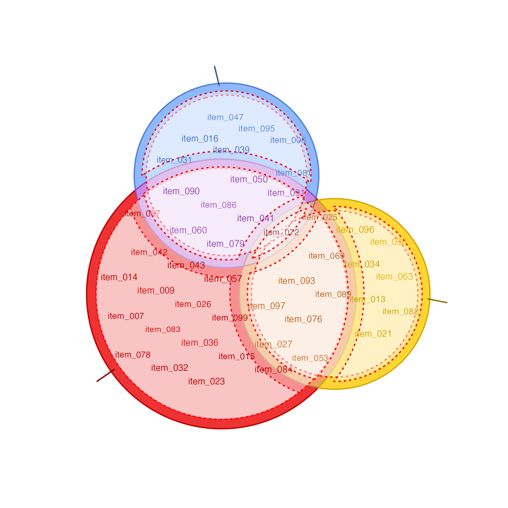

Arrange text labels inside a polygon
polygon_label_fill( sp, labels, color = "black", border = NA, fontsize = 10, cex = 1, degrees = 0, dither_cex = 0.04, dither_color = 0.07, dither_degrees = 0, scale_width = -0.1, apply_n_scale = TRUE, buffer_w = 0, buffer_h = 0, label_method = c("hexagonal", "nonaligned", "regular", "random", "stratified", "clustered"), layout_degrees = -20, draw_buffer = FALSE, buffer_fill = "#FFFFFF77", buffer_border = "red", draw_points = FALSE, draw_labels = TRUE, seed = NULL, plot_style = c("base", "gg", "none"), verbose = FALSE, ... )
Arguments
| sp | object |
|---|---|
| labels |
|
| color |
|
| border |
|
| fontsize |
|
| cex |
|
| degrees |
|
| dither_cex |
|
| dither_color |
|
| dither_degrees |
|
| scale_width |
|
| apply_n_scale |
|
| buffer_w, buffer_h |
|
| label_method |
|
| draw_buffer |
|
| buffer_fill, buffer_border | color values used when |
| draw_points |
|
| draw_labels |
|
| seed |
|
| plot_style |
|
| verbose |
|
Value
list that contains: items_df as a data.frame of item
label coordinates; and g_labels as output from
gridtext::richtext_grob() whose coordinates are defined
as "native", or g_labels=NULL when plot_style="gg";
scale_width with the numeric value used; and
sp_buffer with the sp::SpatialPolygons object representing
the buffer region used for item labels.
Details
This function takes a vector of text labels, and will
arrange those labels to fill the inside of a polygon.
Currently the method uses sp::spsample() which
has a few algorithms to generate point positions
inside a polygon, and these positions are used to
anchor text labels. Currently this method does no
overlap detection.
The primary method to avoid overlap is to use
label_method="hexagon" and degrees=20, since hexagonal
layout tends to have points at roughly 0 and 60 degrees
from one another, and 20 degree rotation tends to allow
text labels to nestle beside each other without much
overlap.
See also
Other venndir label:
draw_gridtext_groups(),
polygon_label_outside(),
polygon_label_segment(),
sp_polylabelr()
Examples
sp <- sp_ellipses(3, 3, xradius=1.2, yradius=3, rotation_degrees=15) words <- jamba::unvigrep("[0-9]", jamba::vigrep("[a-zA-Z]", unique(unlist( strsplit(as.character(packageDescription("venndir")), '[", _()<>:;/\n\t.@&=]+'))))); words <- words[nchar(words) > 2]; plot(sp, col="gold", border="gold4", lwd=2);polygon_label_fill(sp=sp, degrees=-10, labels=words, dither_color=0.2, color="red2", cex=1.2)polygon_label_fill(sp=sp, degrees=0, draw_buffer=FALSE, layout_degrees=45/2, buffer_w=0.4, label_method="regular", labels=jamba::mixedSort(words), dither_color=0.2, dither_cex=0.2, dither_degrees=0, color="red2", cex=1.2)# iterate various options for reducing label overlap par("mfrow"=c(2, 4)); for (lm in c("hexagonal", "regular")) { for (ld in c(0, -45/2, -30, -45)) { plot(sp, col="gold", border="gold4", lwd=2); id <- ifelse(ld == 0, -20, ifelse(ld == -45, 15, 0)); polygon_label_fill(sp=sp, degrees=id, layout_degrees=ld, buffer_w=0.4, label_method=lm, #labels=seq_along(words), #labels=rep("word", length(words)), labels=paste0("word", seq_along(words)), dither_color=0, dither_cex=0, dither_degrees=0, color="navy", cex=0.7) title(main=paste0("layout_degrees=", format(ld, digits=2), "\nlabel_method='", lm, "'", "\ndegrees=", id)); } }polygon_label_fill(sp=sp, degrees=-10, scale_width=-0.3, draw_buffer=TRUE, labels=words, dither_color=0.2, color="red2", cex=1.2)setlist <- make_venn_test(100, 3); vo <- venndir(setlist, return_items=TRUE, font_cex=0.01, proportional=FALSE);# labels inside each venn overlap polygon venn_spdf <- vo$venn_spdf; label_df <- vo$label_df; for (i in seq_len(nrow(venn_spdf))) { j <- match(venn_spdf$label[i], label_df$overlap_set); if (length(unlist(label_df[j,"items"])) > 0) { polygon_label_fill(sp=venn_spdf[i,], ref_sp=venn_spdf, color=venn_spdf$border[i], scale_width=-0.1, draw_buffer=TRUE, labels=unlist(label_df[j,"items"])); } }# same example as above but using proportional circles vo <- venndir(setlist, font_cex=0.01, proportional=TRUE);# labels inside each venn overlap polygon venn_spdf <- vo$venn_spdf; label_df <- vo$label_df; for (i in seq_len(nrow(venn_spdf))) { j <- match(venn_spdf$label[i], label_df$overlap_set); if (length(unlist(label_df[j,"items"])) > 0) { polygon_label_fill(sp=venn_spdf[i,], ref_sp=venn_spdf, color=venn_spdf$border[i], scale_width=-0.1, draw_buffer=TRUE, labels=unlist(label_df[j,"items"])); } }